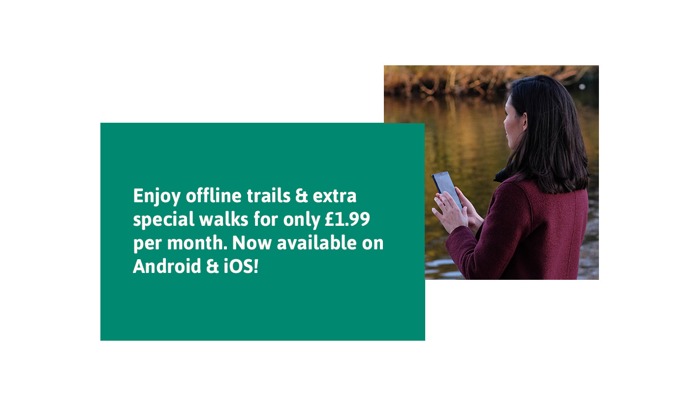

Download best walking routes for offline use
Just when you thought the Trace-Tracker app couldn't get any better, we've just launched a new offline trails feature which means, as part of the premium subscription, you can now download any walking route to use offline - at no extra cost! This new feature is available on iOS and Android.
Perhaps you're headed on a stroll in a low-connectivity area? Or just want to save your data? Download the routes in advance and off you go.
Upgrade now for only £1.99 per month and use this handy new feature plus enjoy access to all of our premium routes and offline trails in one.

Our best premium walking routes selection is continuing to grow. Sneak a peek at a few of our best walk around below or view the full collection in app. Download now on iOS. and Android. or share with family and friends.